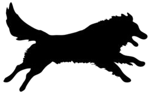
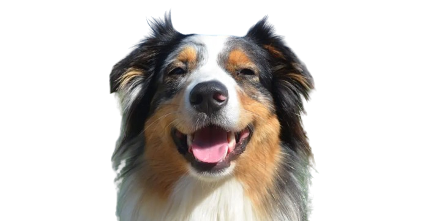

History of the Austrailian Shepherd
Origin:
Despite the name impling the breed is from Australia, the Aussie Shepherd first originated in America during the 1800s. Although the exact origin of the Aussie since its ancestry is traced back to many different breeds, it is speculated that the Pyrenean Shepherd, Carea Leonés, Spanish Mastiff, Collie, Smithfield, and Australian Koolies are its closest relatives.

1800s - Westward expansion:
During the time of westward expansion in America, immigrants from Spain, Great Britain, Scotland, and Latin America rushed to start farms in the newly discovered lands. The settlers brought livestock and many herding breeds from around the world. The sudden increase in population required more food which led to the demand of efficient herding dogs to aid farmers. Thus, over the course of a few centuries, the Aussie Shepherd was bred to be the ideal herding dog specialized for the American West.

1968 - Mini Aussies
In Norco, California, Doris Cordova began breeding Australian Shepherds to create a smaller sized breed under the height of 17 inches. Her goal was to better suit them as house dogs and make them easier to transport to stock shows. The Miniature Australian Shepherd Club of the USA (MASCUSA) was formed in 1990, and the breed was recognized by the American Rare Breeds Association (ARBA).

Present day:
The Aussie still serves as a popular herding dog but has become a popular household pet. It is also used for search and rescue, police work, therapy work, and aid to disabled people.
